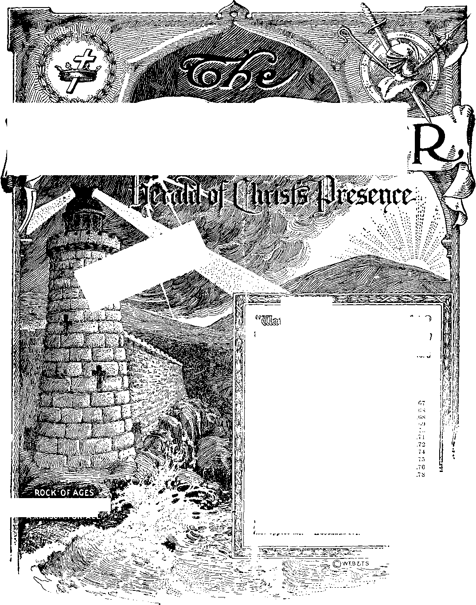

Other foundation can 'j
ftt^.5. ■ • HA H*. H 1 -.< J 1
...66 66
.. 66
Ur»n the earth distress of nations with perplexity; the sea and the waves (the restless, discontented) roaring; men’s hearts failing their. 'or tear and for looking tft tl tim comin* upon the earth (society); for the powers of the heavens (ecc!r*iasticsni) *hall be shaken. . . When ye see these things oegin to come to pass, thea kuuw mat the Kingdom of God is at hand. Look up, lift up your heads, rejo^-ior your redemption draweth nigh.—Matt. 24:33: Mark 13:20; Luka 21.25-3L
Wgpfera tag als©!”- laaia^
Vol. XLV
Semi-Monthly
No. 5
Anno Mundi 6052 — March 1, 1924
CONTENTS
A Ransom tor All...........................
Cro&s of Christ the Power Plant. The Ransom Not Typified.............
Self-Examination Profitable ........
“i nil ’Knowledge and'‘Accurate” Knowledge.. 70 Salvation in God's Wisdom.........
Prwlr-Meeting Text Comments.
Tin: Reign of Solomon.................
Truth Spreading in California (Letter). .
AbraiLam to Solomon.........................................
The Kingdom Rent Asl.xder.........................
World-Wide Witness .......................................
Radio ..................................................................
Convention at Manchester............................
A'.RANSOMfFoSrALL
"I ‘trill stand upon my watch and will set my foot upon the Tower, and will watch to see what He will i ay unto me, and what answer I shall make to them that oppose me.”—Habakkuk 2:1.
THIS JOURNAL AND ITS SACRED MISSION
THIS Journal la one of the prime factors or instruments in the system of Bible instruction, or “Seminary Extension”, now being presented in all parts of the civilized world by the Watch Toweb Bible & Tract Society, chartered A. D. 1884, “For the Promotion of Christian Knowledge’’. It not only serves as a class room where Bible students may meet in the study of the divine Word but also as a channel of communication through which they may be reached with announcements of the Society's conventions and of the coming of its traveling representatives, styled “Pilgrims”, and refreshed with reports of its conventions.
Our “Berean Lessons” are topical rehearsals or reviews of our Society’s published Studies most entertainingly arranged, and very helpful to all who would merit the only honorary degree which the Society accords, viz., Verbi Dei Minister (V. D. IL), which translated into English is Minister of God’s Word. Our treatment of the International Sunday School Lessons is specially for the older Bible students and teachers. By some this feature is considered indispensable.
This Journal stands firmly for the defense of the only true foundation of the Christian’s hope now being so generally repudiated —redemption through the precious blood of “the man Christ Jesus, who gave himself a ransom [a corresponding price, a substitute] for all”. (1 Peter 1:19; 1 Timothy 2: 6) Building up on this sure foundation the gold, silver and precious stones (1 Corinthians 3: 1115 ; 2 Peter 1:5-11) of the Word of God, its further mission is to “make all see what is the fellowship of the mystery which . . .has been hid in God, ... to the intent that now might be made known by the church the manifold wisdom of God”—“which in other ages was not made known unto the sons of men as it is now revealed”.—Ephesians 3 : 5-9,10.
It stands free from all parties, sects and creeds of men, while it seeks more and more to bring its every utterance into fullest subjection to the will of God in Christ, as expressed in the holy Scriptures. It is thus free to declare boldly whatsoever the Lord hath spoken—according to the divine wisdom granted unto us to understand his utterances. Its attitude is not dogmatic, but confident; for we know whereof we affirm, treading with implicit faith upon the sure promises of God. It is held as a trust, to be used only in Ins service; hence our decisions relative to what may and w’hat may not appear in its columns must be according to our judgment of bis good pleasure, the teaching of his Word, for the upbuilding of his people in grace and knowledge. And we not only invite but urge olj readers to prove all its utterances by the infallible Word to which reference is constantly made to facilitate such testing.
TO US THE SCRIPTURES CLEARLY TEACH
That the church is “the tempm of the living God”, peculiarly “his workmanship” ; that its construction has been in progress throughout the gospel age—ever since Christ became the world’s Redeemer and the Chief Corner Stone of his temple, through which, wln-a finished, God’s blessing shall come “to all people”, and they find access to him.—1 Corinthians 3:16, 17; Ephesians 2 :20-11; Genesis 28:14; Galatians 3 : 29.
That meantime the chiseling, shaping, and polishing of consecrated believers in Christ’s atonement for sin, progresses ; and when the last of these “living stones”, “elect and precious,” shall have been made ready, the great Master Workman will bring all together in the first resurrection ; and the temple shall be filled with his glory, and be the meeting place between God and men through,,-it the Millennium.—Revelation 15 : 5-8.
That the basis of hope, for the church and the world, lies in the fact that “Jesus Christ, by the grace of God, tasted death for every man,” “a ransom for all,” and will be “the true light which lighteth every man that cometh into the world”, “in due time”.—■ Hebrews 2:9; John 1 : 9 ; 1 Timothy 2:5, 6.
That the hope of the church is that she may be like her Lord, “see him as he is,” be ‘ partaker of the divine nature,’ and share his glory as his joint-heir.—1 John 3:2; John 17:24; Romans 8:17; 2 1’cter 1:4.
That the present mission of the churcli is the perfecting of the saints for the future work of service; to develop in herself every grace; to be God’s witness to the world; and to prepare to be kings and priests in the next age.—Ephesians 4:12; Matthew 24; 14 ; Revelation 1:6; 20 : 6.
That the hope for the world lies in the blessings of knowledge and opportunity to be brought to all by Christ’s Millennial kingdom, the restitution of all that was lost in Adam, to all the willing and obedient, at the hands of their Redeemer and his glorified church, when all the wilfully wicked will be destroyed.—Acts 3:19-23; Isaiah 35.
Published By
WATCH TOWER.BIBLE TRACT SOCIET>
18 CONCORD STREET O O BROOKLYN, NY U-SA)
Foreign Offices: British: 34 Craven Terrace, Lancaster Gate, London W. 2 ; Canadian ■ 38-40 Irwin Avenue, Toronto, Ontario; Australasian: 495 Collins St., Melbourne, Australia; South African: 6 Lelie St., Cape Town, South Africa.
Please Address tub Society in Every Case.
YEARLY SUBSCRIPTION PRICE: United States, $1.00 ; Canada and Miscellaneous Foreign, $1.50 ; Great Britain, Australasia, and South Africa, 7s. American remittances should be made by Express or Postal Money Orders, or by Bank Draft. Canadian, British, South African, and Australasian remittances should be made to bianch offices only. Remittances from scattered foreign territory may be made to the Brooklyn office, but by International Postal Money Orders only. (Foreign translations of this journal appear in several languages)
Editorial Committee: This journal is published under the supervision of an editorial committee, at least three of whom have read and approved as truth each and every article appearing in these columns. The names of the editorial committee are: J. F. Rutherford, W. E. Van Amburgh, J. ITemery, G. H. Fisher, R. H. Barber. Terms to the Lord’s Poor: All Bible students who, by reason of old age or other infirmity or adversity, are unable to pay for this journal, will be supplied free if they send a postal card each May stating their cast and requesting such provision. We are not only willing, but anxious, that all such be on our list continually and in touch with the Berean studies.____
Notice to Subscribers: We do not, as a rule, send a card of acknowledgment for a renewal or for a new subscription. Receipt and entry of renewal are indicated within a month by change in expiration date, as shown on wrapper label.
Enured as Second Class Matter at Brooklyn, N.Y Postoffice , Act of March 3rd ’h??-
WORLD-WIDE WITNESS
It is the desire of the Society to have classes in every part of the earth engage in a world-wide public witness on Sunday, April 27, and Sunday, May 18. “All Nations Marching to Armageddon, but millions now living will never die” is the subject to be used. Detailed instructions are being seut to the Class Secretary.
NEW BOOKLET
About February 15 the Society began publishing a new booklet entitled “A Desirable Government.” It contains 64 pages, bound in green cover, gold stamped and embossed. It assembles the prophecies describing the kingdom in preparation and in operation. It examines present-day events in the light of these prophecies, emphasizing the great neeis-sity for the kingdom—just what the people need this campaign year. Price, 10 cents per copy; to classes in lots of 50 or more, 6 cents per copy. Following our custom, we will forward a limited number to the classes in the United States on consignment, in care of the Director, and bill the class for the same.
RADIO
For more than a year the Society has had under construction a radio broadcasting station. The larger equipment is not yet complete. A junior equipment, however, is already installed, and license has been issued by the Government. Because the lamer corporations virtually control the air, the Society was compelled to accept for the present a 244-meter wave length. We have much confidence, however, that the Lord will overrule this for our good and to his glory.
All receiving sets should be tuned in for the 244-meter wave length. It is expected that the first official program will have been put on the air Sunday evening, February 24, from 8:30 to 10 : 30 o’clock. In the meantime there will be some promiscuous broadcasting from this station.
CONVENTION AT MANCHESTER
The International Bible Students will hold a three-day convention at Manchester, England, for the Easter season, April 19-21. A number of the British Pilgrim brethren will be present and address the convention, also Brother Van Amburgh and Brother Rutherford from America.
THE SERVICE
From time to time we have need to increase the force at headquarters in Brooklyn. Any unencumbered brethren between the ages of twenty and forty-five who feel that they might want to enter the service here will kindly write for a questionnaire, and when received fill it out and return it to the Society.
Vol. XLV
March 1, 1924
No. 5
"Who will have all men to be saved, and to come unto the knowledge of the truth. For there is one God, and one mediator between God and men, the man Christ Jesus; who gave himself a ransom for
all, to be testified in due time.”—1 Timothy
THE light of God’s smile shone brightly upon man in the Garden of Eden. When Adam disobeyed, God turned the light of his favor away from him and drove him out of the Garden; and ever since man has been groping in the dark, without God or hope, falling into the ditch of despair and death.
2God did not put out the light of his favor towards man, but moved it far into the future, beyond man’s sight, and set it up at the time of the first advent of Christ. A very dim ray from that light reflected backward, and gave hope to some who were feeling after God. It did not give light to many, nor much to those who saw it; but it indicated to them the right direction out of the hopelessness of despair. Little by little the light was increased, as God gave clearer expressions of his purposes through messengers and prophets, until there was sufficient light to form dim outlines upon the surrounding darkness. God so overruled the experiences of some of these searching ones that they formed outline pictures. Those who acted out the pantomime pictures did not know that they were casting shadows; but God had the shadows registered upon the films of history, to be developed in due time.
’Abraham, Isaac, Joseph, Moses, David, and others were thus used. After Moses had led the children of Israel out from Egyptian bondage, God gave them a law, of which the Apostle says: “The law [was] a shadow of good things to come.” (Hebrews 10: 1) In another place he says: “Now all these things happened unto them for ensamples: and they were written for our admonition, upon whom the ends of the world are come.” (1 Corinthians 10: 11) As the light was shining backward from the cross, and as the actors were trying to go forward, they did not see the shadows they cast; nor could they have understood these if they had seen them. However, there could have been no shadows unless there had been some light.
4When Christ came the light shone brilliantly for a time. “That it might be fulfilled which was spoken by Esaias the prophet, saying, The land of Zabulon, and the land of Nephthalim, by the way of the sea, beyond Jordan, Galilee of the Gentiles; the people which sat in darkness saw great light; and to them which sat in the shadow of death light is sprung up.” (Matthew 4:14-1G) “Then spake Jesus again unto them, saying, I am the light of the world: he that followeth me shall not walk in darkness, but shall have the light of life.” (John 8:12) He was the light which had cast the shadows upon the wall of the past; and those shadows had remained hidden, like the films in a camera. But when the due time came, God began to develop those films and to present the pictures for our edification. They were not all developed at once, but gradually, as they might be needed by the Church.
’Jesus brought forth some of the developed pictures and showed them to his disciples, explaining to them, “Blessed are your eyes, for they see: and your ears, for they hear. For verily I say unto you, That many prophets and righteous men have desired to see those things which ye see, and have not seen them; and to hear those things which ye hear, and have not heard them.” (Matthew 13: 1G, 17) The disciples testified to their ability to see and understand some of the pictures, exclaiming, “Did not our hearts burn within us, while he talked with us by the way, and while he opened to us the scriptures?” and “We have not followed cunningly devised fables, when we made known unto you the power and presence of our Lord Jesus Christ, but were eyewitnesses of his majesty. For he received from God the Father honor and glory, when there came such a voice to him from the excellent glory, This is my beloved Son, in whom I am well pleased. And this voice which came from heaven we heard, when we were with him in the holy mount. We have also a more sure word of prophecy; whereunto ye do well that ye take heed, as unto a light that shineth in a dark place, until the day dawn, and the day star arise in your hearts [not in the world] —Luke 24: 32; 2 Peter 1:16-19.
’These texts imply that man was in the dismal swamp of death, with no hope of escape; but that Christ had thrown a ray of bright light into the swamp; and that as many as saw it and followed the direction it indicated, would find escape. It was not a will-o-the-wisp, but an accurate light, which if followed would lead to the full daylight of God’s favor.
7The apostle Paul also brought forth several more pictures, explaining, “Which things are an allegory: for these are the two covenants.” referring to some experiences of Abraham, Sarah, and Hagar.—Galatians 4: 24; Colossians 2:17; Hebrews 8: 5; 9:11, 24; 10:1.
THE CROSS OF CHRIST IS THE POWER PLANT
knowledge of God’s Word is often referred to as light: “The entrance of thy words giveth light.” “Thy word is a lamp unto my feet, and a light unto my path.” (Psalm 119:130, 105) The ransom which God had provided was to bring blessings to all the children of Adam. (Romans 5:12-18) It would be necessary for the knowledge of that fact to reach all. “That is the true Light, which lighteth every man that cometh into the world.” “They shall not teach every man his neighbor, and every man his brother, saying, Know the Lord: for all shall know me, from the least to the greatest.” •—John 1:9; Hebrews 8: 11.
9The cross might be said to be the power plant which supplies all the light upon the plan of God for the salvation of the world, and also the light upon the path to glory for the Church. Had there been no ransom provided, no light would have been needed. Man would have been left to die like the beast. The light from the cross brought out three prominent features of God’s great plan:
10(1) The foundation, a ransom for all: “For other foundation can no man lay than that is laid, which is Jesus Christ” (1 Corinthians 3:11); “Neither is there salvation in any other: for there is none other name under heaven given among men, whereby we must be saved.”—Acts 4:12.
11 (2) Restitution for the world: “The Son of man is come to seek and to save that which was lost”; “The times of restitution of all things, which God hath spoken by the mouth of all his holy prophets since the world began.”—Luke 19:10; Acts 3:21.
12 (3) “The prize of the high calling of God in Christ Jesus.”—Philippians 3: 14.
“Otherwise stated, these features are: The Ransom, the Restitution, and the High Calling. These were all seen clearly by the early Church during the time of the apostles, and for some time thereafter. But during the dark ages which followed, this light gradually faded until it became so dim that even the outlines of the plan could not be seen distinctly. As the time neared for the closing of the heavenly race and the work of restitution to begin, God again shed forth light from his Word through his messenger to the Laodicean Church; and the beauty of not only the outlines, but many of the details, was thrown upon the screen. The sight thrilled the hearts of all the consecrated ones who were running for the prize of the high calling, and stimulated them to greater love, activity, and devotion to God.
“The possession of light, or knowledge, always brings responsibility. Jesus stated the case clearly, saying, “And that servant which knew his Lord’s will, and prepared not himself, neither did according to his will, shall be beaten with many stripes. But he that knew not, and did commit things worthy of stripes, shall be beaten with few stripes. For unto whomsoever much is given, of him shall much be required: and to whom men have committed much, of him they will ask the more.”—Luke 12 : 47, 48.
“Being informed that God’s dealings with the children of Israel were intended as illustrations or les-~ons for our edification, it is well that we carefully note how he dealt with them, to what extent he held them accountable, what punishments he meted out to them for disobedience of various kinds. Whatever light they had was a reflection from the ransom. It shone backwards through the Law and its ordinances, and might be called a moonlight, or reflection of the sunlight.
“Before proceeding further it might be well to have in our minds a clear definition of the word ransom. The “Standard Dictionary” gives the following: “To secure the release of, as a person or property, from bondage, detention or punishment, by paying a sum of money or its equivalent. To rescue. The amount or consideration paid for the release of a person or property captured or detained. Release from captivity, bondage or the like, for a consideration.”
17It is therefore impossible to use the word ransom properly without implying damage or danger in some way to some one or thing. The ransom price, or stipulation of the conditions of release, is usually stated by the one who holds the property or captive. Man stood condemned before God; therefore it was for God to state the amount of the ransom demanded, or any other conditions on which he might permit the debtor to go free.
“In the Old Testament the word ransom is not used very often, and even then not made prominent. The word atonement, which carries a similar thought, is more frequently used, especially in connection with the tabernacle services. Both words imply estrangement between God and man, and the necessity for some means by which the estranged parties might be brought together. The conditions were always stated by Jehovah.
THE RANSOM IS NOT TYPIFIED
19In the New Testament the subject of the ransom is made prominent, both by the Lord and by the apostles. The definition of the word in 1 Timothy 2: 6 is given by Professor Young as “a corresponding price.” This definition is borne out by the Law in the Old Testament. The meaning of the word could not be pictured or typified. It would take the life of a ram to redeem a ram, or the life of a bullock to redeem a bullock. No provision had been made to redeem animals; therefore they could not be used for such a picture. The Law, however, states the demands very clearly: Life for life; eye for eye; tooth for tooth; hand for hand; foot for foot; burning for burning; wound for wound; stripe for stripe. (Exodus 21:23-25) The Apostle verifies this, saying, “Since by man came death, by man came also the resurrection of the dead.”—1 Corinthians 15 :21.
20As the benefits resulting from the sacrifice of the bullock on the atonement day were applicable to every Israelite, so the benefits resulting from the sin-offering by Christ will be applicable to every son of Adam in due time. (Romans 5:12-18; 1 Corinthians 15:23) Had there been no sin-offering planned and provided for, there would have been no sacrifice of the bullock on the typical atonement day; for there would have been nothing to typify.
21The giving of even the reflected light brought grave responsibility to the Jews. (Amos 3:2) The light, responsibilities, blessings, and punishments given them were pictures of greater light, responsibilities, blessings, and punishments to follow during the Gospel and Millennial ages.
--’Let us note some of the incidents recorded for our admonition; for “he that despised Moses’ law died without mercy under two or three witnesses: Of how much sorer punishment, suppose ye, shall he be thought worthy, who hath trodden under foot the Son of God, and hath counted the blood of the covenant, -wherewith he was sanctified, an unholy thing, and hath done despite unto the spirit of grace?”—Hebrews 10: 28, 29.
23Shortly after the installation of the typical priesthood the two elder sons of Aaron, Nadab and Abihu, were smitten by fire from God for offering “strange fire.” They must have known that they were acting contrary to the commands of God; hence their culpability, and the swift punishment which followed.—Leviticus 10:1, 2.
2‘Korah, Dathan, Abi ram, and all those with them, suffered the punishment of death for not recognizing God’s appointment of Moses. They had covenanted to do all that God had commanded, and to abide by his arrangements.—Numbers 16.
“Miriam, the sister of Moses, was stricken with leprosy as a punishment for even criticizing Moses for marrying an Ethiopian woman. It was none of her business; and if God had chosen Moses for the position of leading the children of Israel out of bondage to liberty, that was none of her business, either. She should have been very thankful to God for her own deliverance, no matter by whom God may have been pleased to bring it about.—-Numbers 12.
26Uzzah, the Levite, was instantly smitten with death for putting forth his hand to steady the Ark of God, which King David desired to take to Jerusalem. Uzzah and Ahio, as Levites, should have known better than to set the Ark upon a cart. (See Numbers 4: 15) They were supposed to carry it.—2 Samuel 6:1-11.
27Moses was not permitted to lead his people into the promised land because he had disobeyed Jehovah by smiting the rock instead of speaking to it, as he had been commanded.—Numbers 20:7-12.
28David and the whole nation of Israel were punished because David ordered Joab to take a census of the nation. (1 Chronicles 21:1-17) These and many other instances show that God did not hold his people guiltless when they transgressed.
OCCASIONAL SELF-EXAMINATION IS PROFITABLE
29The Apostle advises: “Examine yourselves, whether ye be in the faith. Prove [test] your own selves. Know ye not your own selves, how that Jesus Christ is in you, except ye be reprobates?” (2 Corinthians 13:5) Each runner for the heavenly prize should carefully test himself or herself occasionally. Are we bringing any sacrifices to the Lord? Are they prompted by love? And are they consumed by the fire of obedience? A little practice will enable each one to apply the test quickly and effectively.
30The Lord’s rule for applying the test is very simple: “If ye love me, keep my commandments.” (John 14:15) No one who strives to do that to the best of his ability need have any fears; for “if ye keep my commandments, ye shall abide in [remain in] my love, even as [in the same way that] I have kept my Father’s commandments and abide in his love.” (John 15:10) We have the light of knowledge of what his commandments are; and if we are lacking, we have his promise to give us the necessary wisdom. (James 1:5) Whatever light we have radiates from the ransom. Therefore if we deliberately disobey, or even prove careless of the commandments, indifferent to them, we are proportionately disregarding the ransom, whether we say so in so many words or not. Wo are not yet out into the full daylight; therefore if we ‘hesitate, stop, or turn back, we shall never reach it. Disapproval by God will follow, and the second death may be the result.—Hebrews 10: 25-31.
31We here quote from The Watch Tower of November 1, 1911, page 405:
sz“More than thirty years ago we were inclined to think that all must come to a full knowledge of all truth ere they could be liable to the second death; but we have come to the conclusion from the general tenor of the Scriptures that this is not the Lord’s view and plan. On the contrary, deliberate and intelligent rejection of the first principles of the Gospel seems to imply an unfitness for further favors, on the ground that he that is unfaithful in that which is least would be unfaithful also in more [Italics are Brother Russell’s]. . . . We confess little hope for the scribes and Pharisees who, when they could find no other fault, ascribed our Lord’s good works to the devil.”
33Did Judas deny the ransom? He had the light of the Master’s presence and teaching for three years. He knew that Jesus was the representative of Jehovah; for he had witnessed many miracles, and had himself been sent out by the Master to preach that the kingdom of God was at hand. He deliberately turned from that light, and did what he knew was reprehensible, traitorous, unjust, murderous. His act was against the light which had come to him as a result of the ransom.
S4But there were others at that time, also. The very ones who had bargained with Judas had been witnesses of Christ’s miracles; but because his teachings had shown up their hypocrisies, instead of repenting and trying to reform they deliberately set about to destroy, to murder him. (John 11:47-53) This they did in direct disobedience to the command, “Thou shalt not kill.” Seven times in the twenty-third chapter of Matthew does the Lord call the scribes, Pharisees and lawyers hypocrites. A hypocrite is not a deceived person, but a deceiver, one who knows that he is deceiving; therefore his actions are intentional. Those scribes, Pharisees and lawyers knew that they had been deceiving the people (Verse 14), and that they were then trying to keep the people deceived as regards his mission.—Matthew 12 : 22-24.
S5These men professed to be the representatives of Jehovah, keeping his commandments, making long prayers, and parading before the people as special favorites of Jehovah. Prior to the coming of Jesus there might have been some excuse for their ignorance, as he said: “If I had not come and spoken unto them, they had not had sin: but now they have no cloak for their sin. He that hateth me hateth my Father also. If I had not done among them the works which none other man did, they had not had [the | sin [the Greek is emphatic here], but now they have both seen and hated both me and my Father.” (John 15:22,23) To these classes he said in substance: 'You liars and hypocrites! Yrou know that you arc lying and trying to deceive the people. Yrou are doing it deliberately and wilfully, directly contrary to the express commands in the Law which you profess to uphold. How can you escape the judgment of the second death!’
“FULL” KNOWLEDGE AND “ACCURATE” KNOWLEDGE
3GWere they denying Ihe ransom? They had the light and also the Law, which taught what was right and what was wrong. Jesus was there to lead them to freedom. They were under the condemnation of the first death. If they refused to follow the light which would lead to liberty, they would remain under condemnation; and it would eventuate in the second death. They would not have to be brought clear out from under the first condemnation in order to be considered unworthy of life. All they needed to do was to refuse to take advantage of the opportunity to escape. “I am the light of the world; he that followeth me shall not walk in darkness.”
37Some may say that the Apostle distinctly says, according to literal rendering of the Greek: “God will have all men come to an accurate knowledge of the truth.” When did these men get a full and accurate knowledge of the truth, that would make them amenable to the second death? There may be considerable difference between the definitions of an accurate knowledge and of a full knowledge. It is an accurate mathematical fact that two times two are four. That is accurate as far as it goes, but it is far from a full knowledge of mathematics. If one were to refuse to accept that fact because he could net see all there is in wetheniatiis. he might as well stop. He would never reach correct conclusions. Jesus had the right kind of light. It was not all the light, but it was enough for the time to show the way to life to all who desired to seek it.
3sSuppose the whole human race were in a dismal swamp, with no light whatever, and it were impossible for any one to find a way out. Some one might hold forth a small light, sufficient to show all who followed it the way to safety. What would be the result if some were to refuse to follow it, and give as an excuse that it did not light the path to the end, nor show what was at the end, and were to describe all they would enjoy when they did get out? Would that be refusing the offer of help ? Most certainly! Suppose others had huard something of the expected deliverance, and had their imaginations set upon the way it was to come; but because it did not come in the way they expected, would not accept. Would they lose the opportunity for salvation? Possibly they might say: 'If we cannot have a better light we will not accept any. We don’t want an old candle or torch. We want an electric light, and a paved road to our destination, and a fine automobile to come and take us out.’ What would be the result? They would remain where they were, and would eventually perish. They had an opportunity to escape, and refused.
39The offer of salvation was from Jehovah, and he could send it as he chose. He chose to send it through humble representatives. Jesus was born in a manger, and lived in humble surroundings. His disciples were all from the humble walks of life. God chose to send his light through such instrumentalities. If those who saw it refused to follow it, God was not under obligation to send them more light. They had one fair opportunity to escape from their peril. The light which they had, came because of the ransom; therefore if they denied it, they were 'denying the ransom, whether they knew all the details or not.
40That light was to reach every man in the swamp, but it would depend upon whether the individuals accepted it or not. As fast as it came to them it became a means of salvation. They would not need to get entirely out, look all around and examine all the beauties of restitution, and then decide not to accept of them, before they could be said to have denied the ransom. They could refuse the light that leads to life and stay in the swamp. The result would eventuate in the second death, just the same.
41The second advent of the Lord is here. The light is far more brilliant than at his first advent. The light still comes from the ransom. A knowledge of what is right and wrong has been sent broadcast. There are thousands who profess to be the servants of the Lord, representatives of Christ and his law. They claim to wear his livery, and call themselves by his name. They form a large and influential class. They also have come in contact with the truth as given forth by the Lord’s consecrated ones. As a class they have deliberately and wilfully not only refused the light for themselves, but have often vilified and mistreated those who brought it to them, and warned all others to have nothing to do with the light. If “woe unto you, lawyers | those who professed to expound the law of God to the people] ! for ye have taken away tlm key of knowledge: ye entered not in yourselves, and them that were entering in ye hindered” (Luke 11:52) was applicable at the first advent, how much more so now I Many of these ecclesiastical lawyers know that they are lying, trying to deceive the people. Some have admitted it in private conversation, but give as an excuse: “We cannot afford it; our bread is not buttered on that side.” The records of the recent wartime show how vicious some of them can be.
MAN SHOULD SEE SALVATION IN GOD’S WISDOM
42Have such denied the ransom? Some may say: How could they; for they know nothing about it? The Jews of Christ’s day knew nothing of the philosophy of the ransom. They claimed to have light of their own, and therefore would not accept Christ. “Jesus said unto them, If ye were blind, ye should have no sin: but now ye say, We see; therefore your sin remaineth.” (John 9:41) If that were true then, would it be any less true today, under the increased light now shining? How much did any of us who are now in present truth know of all the details before we started to follow its light? For that matter, how many know all the details yet? Not one. Yet every one of us is responsible for the light we do have. We expect increasing light and knowledge; for “the path of the just is as a shining light [it is light, and accurate light], that shineth more and more [ever on the increase] unto the perfect day [until we reach the full light of perfect day|.” (Proverbs 4:18) Not even our Lord himself saw all the way at first.
43For whatever light we have, or might have if we requested it, God will hold us responsible. We must follow what we have, or no more will be given. This has been our understanding all down through the harvest period. This is specially true of the consecrated. But what about those who are not consecrated, not spirit-begotten ?
44During the Millennial age no one will be spirit-begotten ; yet all who refuse to follow the light will be cut off, go into the second death. It is not therefore necessary to become spirit-begotten to commit the sin unto death. H there were some who were not spirit-begotten at the Lord’s first advent who were in danger of that severe punishment, it would not seem at all unreasonable that if any manifested a similar spirit at the second advent, they would merit the same sentence.
45Some did not like the way God sent his light then; some do not like the way he is sending it forth now. They know enough to know that the work which the Lord has been doing, and the means which he has been using, are along the way of righteousness and holiness and in harmony with the commands of God. Yet they refuse to accept it. It is not put forth in the way that just suits them. They would prefer to have more polished “chandeliers,” and more popular places for meeting, and better social fellowship. If it were to come in some other way, or through some other channel, they might accept it. But Jehovah has seen fit to choose his own instruments and methods.
46Are those who refuse to accept the light now shining, denying the ransom ? At any rate they are refusing some of the light which comes from the ransom; for if there had been no ransom, there would never have been the great light now shining upon the world in all directions—scientifically, educationally, doctrinally, governmentally’, and in many other ways. To what extent such are individually responsible, it is not for us to say; for we have the specific command, “Judge not that ye be not judged.” If we disobey that command we place ourselves in the list of those who do not obey God’s commands, and immediately come under condemnation ourselves. But the Lord did tell us to observe what kind of fruit a tree bore. His Word is not given us for a whip with which to scourge others, but for our own sanctification and edification, that the man of God may be perfected.
47But some may say: ‘Your picture does not give a true scene; for God intends to clean up the swamp, and all who are there will have to come out whether they desire to do so or not. God will have all to come forth from the grave; for he “will have all men to be saved, and to come unto the knowledge of the truth.” ’ The swamp was used to picture the condemnation to death, and not the grave. All who have gone into the grave under condemnation to death in Adam, and who have not had any opportunity to see the light, will have that opportunity granted them in due time. If God sends that light to some before they go into death the first time, and they refuse to accept it, they will go into the grave; and their first death will become the second death. The death condition is the same in both cases, with the exception that the first death has a termination to all whom Christ awakens. Thus the first death of Judas becomes the second death to him, because he refused to come out from under the condemnation. How many others there may have been associated with him, we know not. How many there may be at the present time who will experience a similar sentence, we know not. Enough light will be given that “whosoever will” may be enabled to return to the full favor of God. Whosoever will not. will not be compelled to accept.
48We know of no scripture which implies that every one must come to a full knowledge of all the details of God's plan, or even of all the details of restitution, before he can deliberately deny the ransom.
40In view of the foregoing, it should lead each of us to a sober consideration of our own relationship towards Jehovah, and whether we are not liable to come short of our consecration and opportunities. If God severely punished Miriam, Korah, Dathan, and Abiram for not recognizing and working in harmony with his arrangements then, shall he do less now ? Suppose we have seen the great light now shining, and the opportunities now at hand, and have rejoiced in them, and later have become cool or indifferent, or opposed! What do the lessons from the shadow pictures teach?
B0If Ezekiel 9:1-4,11, refer to the Laodicean messenger, then verses 5-7 must refer to a great work to follow his work. Are we in the class that is doing any such work? There is also a great work to do. as mentioned in Isaiah 13:2 and Joel 2:1, to declare the messages of Isaiah 13:4-13 and Joel 1:2-11; also the beautiful message of Isaiah 52: 7, 8; and the proclamation of Isaiah 61: 3. Surely there is plenty of work for every one.
81If we criticise the Lord’s servants, we criticise the Lord himself for selecting and using such servants. If we cannot get along with the servants he may be disposed to use, it will not be long ere we cannot get along with the Lord himself. The Lord would have us come to an accurate knowledge of his methods, though it may not yet be a full knowledge. When we realize, further, that this is a time when he is shaking everything that can be shaken, it behooves us more than ever to be on the alert, that we be not among the things shaken. “He shall sit as a n mer and purifier of silver; and he shall purify the sons of Levi, and shall purge them as gold and silver, that they may offer unto Jehovah an offering in righteousness. And the Lord, whom ye seek, shall suddenly come to his temple, even the messenger of the covenant, whom ye delight in: behold, he shall come, saith Jehovah of hosts. But vho may abide the day of his coming? And who shall stand vhen he ap-peareth ? For he is like a refiner’s fire, and like fuller’s soap.” (Malachi 3:3, 1.2) But “he that dwcllcth in the secret place of the Most High shall abide un<l.r the shadow of the Almighty.”—I’salm 91: 1.
QUESTIONS FOR BEREAN STUDY
What was the plight of man after he was driven from the Garden of Eden? fl 1.
In what way did God show his favor toward man after the fall of Adam ? fl| 3.
Why could not the Old Testament worthies see the shadows they were making 9 fl 3.
What did Isaiah write concerning a light? Who was that light? fl 4. ■
Who brought forth developed pictures? How were the disciples encouraged thereby? fl 5. 6
Who brought forth other pictures? What were some of them? fl 7. To xx hat is God’-' Word ollen likened? How is it done? fl S.
Wh.it may be xaid to be ilu- nlant vJiuli supplies the light?
What are three prominent features? fl 9-12
How else may we refer to these three fealtmos? Have they been distinctly seen throughout the Gospel age/ •' 13.
How is responsibility to li^lit shown in Scripture? fl 14, 15.
What docs the word ‘ransom” mean? Who determines its value? fl 16-18.
Is (here any type of the ransom? If not. whv not? fl 19.
Could the sin-offering be typified, and how was it done? fl 20. Gi\o some examples ot how light brings responsjbilitv. fl 21-28. Why should we be admonished to examine ourselves? How is it done? fl 29.
What is the test of our standing? What are the consequences of disregarding the ransom9 fl 30.
Is it necessary to ha\e full knowledge before one may die the second death? fl 31, 32.
In what way did Judas deny rhe ransom? fl 33.
How did Jesus refer to the scribes, Pharisee", and lawyers? Why were they in danger of the second death9 fl 34-3G.
What may be said of the difference between a “full knowledge” and an “accurate knowledge”? fl 37. ’
What would be the plight of the race in a dark swamp, refusing to follow a light? fl 38.
As God is the author of salvation, should it be according to his choice as to the way it reaches humanity? fl 39,40.
What great event has already transpired? What class is willingly ignorant of it? fl 41.
How does the Lord show that there is responsibility with comprehended truth ? fl 42, 43.
Is it necessary to be spirit-begotten before one is subject to the second death? fl 44.
Are God’s ways ever pleasing to the reprobate mind? fl 45.
Is it for us to decide the responsibility of anyone and to render judgment? fl 46.
What does the “swamp” in our picture represent? Is Go,] the judge of the amount of pght to be giu*n in each indixidual co ■ before the second death becomes a possibility? fl 17, 48.
Is it not obligatory upon ns daily to scrutinize our words and thoughts and doings? fl 49.
What are some of the scriptures showing that there is now a great work for us to do? fl 50.
What is the danger of unfriendly criticism of the Lord’s servants? fl 51.
TEXT FOR APRIL 2
"Gather my saints together unto me.’’—Psalm 50: 5.
This is strictly a harvest message. “The saints,” as the term is here used, is synonymous with the kingdom class. These Jehovah has been preparing since the first advent of our Lord. The time for gathering these together began at the second appearing of our Lord. “Saints” means purified ones, the same as the virgin class. The text therefore has reference to a class who are looking for, and who love, the appearing of the Lord Jesus. Such have a hope of being members of the house royal, the Chief over which house is the Lord Jesus. He stated that he would come again and receive the members of the house to himself, and that the time of his second presence would be a ha nest time. Hence the appropriate time for gathering together those who have entered into a covenant with Jehovah by sacrifice.
When members of a household have been separated for a long while and the time grows near for a reunion, each one with a good heart looks forward with joy to that time. Those who will compose the completed house of sons have been journeying in separate companies, many of them singly and alone, for a long while. They have looked forward to the home-coming, when they should see their beloved Lord and Master and by him be presented to the great Eternal Father, Jehovah God. It has been a joyful hope. Now since the Lord has been present for many years, and the gathering of his saints together has progressed almost to a completion, those who appreciate their blessed privileges are now greatly rejoicing in their hearts. Those who have remained faithful until the time when the Lord has come to his temple, who have been approved by him, have been invited to enter into his joy. Therefore it has been truly a joyful gathering. Greater joy fills the heart of these as they look forward to the consummation of their hopes so near at hand. The apostle Paul says that this joy, which begins at the time when one makes a cove-i ant by sacrifice, must continue with increased intensity, of course, until such joy is full and complete. —Hebrews 3:6.
The 118th Psalm seems to have a special application also at this time, when the gathering is about completed and when the Lord is in his temple. The heart sentiment of the gathered ones is expressed in the words of the Psalmist: “The Lord is my strength and song, and is become my salvation. The voice of rejoicing and salvation is in the tabernacles of the righteous.” They see how wonderfully the Lord has dealt with them; and again the Psalmist expresses their sentiments thus: “This is the Lord’s doing; it is marvelous in our eyes. This is the day which the Lord hath made;, we will rejoice and be glad in it. Save now, I beseech thee, 0 Lord: 0 Lord, I beseech thee, send now prosperity.” (Psalm 118:14,15,23-25) Thus the saints gathered together are now anxious that complete prosperity shall crown their efforts, and that soon they shall be in their home, eternal in the heaxens, not made with hands, there to behold the beauty of Jehovah and to inquire in his temple forever. V> hat a wonderful home-coming that will be! May each one who is inspired by this hope bend every effort now to show appreciation of the Lord’s goodness by faithfully representing him and his interests in telling to others the blessings that his kingdom will bring to the world.
TEXT FOR APRIL 9
"The kingdom of God is .. . righteousness, and peace, and jog.”—Romans 14:17.
IN THIS text St. Paul is addressing those who are prospective members of the royal family of heaven. He is pointing out to them the proper course of action. In the context he emphasizes the fact that the course of action should be to the glory of the Lord and to the upbuilding of others who have faith; for no one in the Lord lives unto himself. He owes a duty to every other member of the body. Therefore those who go to make up the kingdom class do not progress toward their ultimate home by following a sHLh course; for the proper course is righteousness, peace, and joy in the holy spirit.
Righteousness as here used does not mean merely a justified condition. It means more than that. It means a right course of action; following that which is right and true, as distinguished from that which is wrong and untrue. No one is righteous in himself. His righteousness is through Christ Jesus. But this means a justified condition. When one becomes a new creature he sees that the right course for him to pursue is marked out by the Word of God. To show that this is what the Lord intended, the Psalmist said: “Thou hast seized hold of me by my right hand. With thy counsel [word of truth] wilt thou guide me, and afterward take me on to glory.” (Psalm 73: 24, Leeser') A Christian cannot, therefore, follow a selfish course.
His course must be one of peace: “Follow peace with all, and holiness, without which no man shall see the Lord.” (Hebrews 12:14) Have “your feet shod with the preparation of the gospel of peace.”—Eph. 6:15.
One must first be. at peace with God before he is even started in the way of membership in the royal family of heaven. Peace with God means justification by faith through the merit of Christ Jesus. Thereafter he must pursue a course of peace with his brethren; and diligently striving to obey the commandments of the Lord, he will enjoy the peace of God that passeth understanding. This peace is the condition of mind and heart resulting from an abiding confidence in Jehovah, in the Lord Jesus, and in the Word of God. As Jehovah’s prophet says: “Thou wilt keep him in peace, peace, whose mind is stayed on thee: because he trustith in thee.” (Isaiah 26: 3) One who has his mind fastened upon the Lord will enjoy a quiet eternity by virtue of his confidence in the absolute stall ility of the Lord.
The course of the Christian, vho hopes to be of the kingdom, must be one of joy. There must be joy at the beginning of his course, the joy must continue throughout his Christian experience, the joy must abide with him until it reaches its fulness in the presence of the Lord. This joy may not be outwardly manifested at all times. Many will be the fiery experiences of the Christian; yet through all of these he can rejoice that he is in the hand of the Lord, that he dwells in the shadow of his wing and is kept by his power. If he suffers as a Christian, he has reason to rejoice because, as St. Peter puts it: “If ye be reproached for the name of Christ, happy are ye; for the spirit of glory and of God resteth upon you.” (1 Peter 4: 14) The Christian will have a special joy in the fact that the Lord is present, gathering unto himself his saints in his temple, examining the members; and in the further fact that the Lord has invited his followers to enter into his own joy. These conditions are made vital to membership in the divine family.
---Mabch 23--1 Kings 3 to 11; 2Chbonici.es 1---
SOLOMON’S WISE CHOICE—SOLOMON’S TEMPLE DEDICATED—SOLOMON AND DAVID AS TYPES.
“The fear of Jehovah is the beginning of knowledge."—Proverbs t:7.
UNDER Solomon the kingdom of Israel reached its apex of earthly honor, and Solomon has also the Scriptural record of being the wisest man among men. (1 Kings 4:31) But the honor which came to Israel in his days was only in part due to him ; for neither he nor Israel could have enjoyed these favors had the reign of David not prepared the conditions. It is said of Solomon, as of his father David that he “sat on the throne of the Lord.” (1 Chronicles 29:23) As David was approaching his end factions in Israel disclosed themselves; and his last days were much disturbed. He had many sons, and many selfish interests were raised by those who sought privilege and authority rather than the good of the kingdom. The choice of Solomon to be king was not favoritism on David’s part; for the Lord had said that Solomon should sit on the throne.—1 Chronicles 28: 5, 6.
2If the question is raised why a son of Bath-sheba was chosen by God in preference to the other sons of David, the answer would at least partly be in that Bath-sheba became wife to David after he had been made king over all Israel. David was twice married before being king at all; then he married several times while king in Hebron. Bath-sheba was therefore queen to David as king over all Israel. It pleased God to give his kingdom into the care of Solomon, the second son of Bath-sheba; and without doubt Solomon was by far the most suitable in disposition for the high privilege. David when dying spoke of Solomon as young and tender; his name means “peace,” and was agreeable to Ids disposition. His young heart leaned towards righteousness. His father, in words full of true worship and of tender feeling, had already given Solomon instructions for the erection of the temple.—1 Chronicles 28 : 9-21.
3The earliest days of Solomon’s reign were disturbed by the trouble which broke the peace of David’s last days. Solomon has been accused of harshness, and even of judicial murder in the matter of the death of Joab, Shimei, and Adonijah; but in the case of the former two he had a charge from his father. Joab, who had been chief of the army during all the time David reigned in Jerusalem, had done much for Israel; for he was a very bold and clever leader. But he was a self-seeker, with a very unruly spirit which had led him into brutal murders of men who might stand in his way to advancement. David said of him and Abishai his brother: “Those men be too hard for me.”— 2 Samuel 3 : 39.
4Shimei, who had cursed David, was really unrepentant; and David charged Solomon to see that neither he nor Joab died in peace. David without any vindictiveness saw that justice would not be done were these two men allowed to die in peace. If therefore they did not offend, Solomon was to circumscribe them with circumstances which would demonstrate their perverseness. Both were dangerous to the peace of Israel, and Solomon acted wisely in clearing Israel of all who would hurt the peace of God’s kingdom of peace.
5No doubt there was also a divine purpose to show in type that a time of judgment and retribution comes with the establishment of the kingdom of heaven. Solomon, both for his own sake and, we may safely say, led by the spirit of justice, sought out the things which would offend, even as the Lord said he would do when he should return: “The Son of man shall send forth his angels, and they shall gather out of his kingdom all things that offend, and them v. Inch do iniquity.”—Matthew 13: 41.
SOLOMON’S WISE CHOICE
®As soon as the kingdom was settled, Solomon gathered all Israel to Gibeon, where the tabernacle of Moses was. He reerected the brazen altar; but the Ark was left on Mt. Zion, in the tent that David had made for it. (2 Chronicles 1:1-3; 5:2-5) A great sacrifice was offered to the Lord, Solomon wisely showing Israel that he wished as their king both to honor Jehovah and to lead them to do the same. That night the Lord appeared to Solomon in vision, and offered to him to ask whatever he would. Solomon chose wisely. In humility, and in desire to be a true king to Israel, he asked that wisdom be given him that he might rule this great people aright.—2 Chronicles 1: 7-12.
’If we ask what it was that guided this young man of tender years to so true a determination, the answer is: He had a proper appreciation of the relationship of Israel to God as God’s chosen people. Had he been of a proud spirit, he might have thought that Israel was nothing very special, that there were not many learned or wise amongst them ; and he might have despised them as Rehoboam his son did in a later day. (2Chronicles 10:13,14) He honored them because God had honored them. He asked accordingly, and God rewarded him exceedingly.—1 Kings 4: 29.
8The building of the temple for the honor of God, which David his father ever had in mind, was a project according to Solomon’s own heart. He also decided to build a house for himself, for the kingdom. (2 Chronicles 2:1) In preparation for this work he entered into an agreement or covenant with Hiram, king of Tyre, for men accustomed to cut timber to go into the forest of Lebanon and get cedar wood for the building of the temple and for the house which he was to have for the glory of the kingdom. (2 Chronicles 2:3-10) Solomon also set all the foreigners in Israel to the rougher labor entailed in the work. He gained the help of Hiram of Tyre by friendliness, partly because Hiram had been a friend of his father David. His letter to Hiram is an example of courtliness, and a faithful witness of his faith in the God of Israel as the God of heaven. Lebanon was in Israel’s territory, but was held by Tyre as under suzerainty. Probably Solomon had the right to demand; but as Tyre was strong, and as there was no reason why he should attempt to compel Tyre, his course was a wise one.
SOLOMON’S TEMPLE DEDICATED
9It was not until three and a half years after Solomon had ascended the throne that the building of the temple was begun. Those years were spent in settling the affairs of the kingdom, and in such preparation as was necessary for the work of the building. The actual erection took seven years and six months (1 Kings 6:37,38), so that Solomon was in his eleventh year when the temple was completed. It was one of the world’s most wonderful buildings, both because of its costly adornments and because of the manner of its building. The stone and heavy malerial were prepared before they were brought to Mount Moriah, and then not a sound of a hammer or of an iron tool was heard in its construction. Silently all the various parts got each into its place. (1 Kings 6:7) The stone was quarried underneath Jerusalem. In its natural state, as was recently discovered, it was so soft that it could be worked with a joiner’s tool; but when exposed to the air it sets very hard.
io\Vhen the temple was completed, and all preparation had been made for its dedication to Jehovah, “Solomon
assembled the elders of Israel, and all the heads of the tribes, the chief of the fathers of the children of Israel, unto Jerusalem in order to bring up the ark of the covenant of the Lord out of the city of David, which is Zion.” (2 Chronicles 5:2) The Ark was then removed from Zion to its place in the temple on Jit. Moriah.
“When the priests who bore the Ark had put it into the holy place, and had come out, and as the Levites, and the singers, clothed in white linen with their cymbals and harps, stood at the east end of the altar, and with them the trumpeters and singers, all made “one sound to be heard in praising and thanking the Lord.” Then the house was filled with a cloud, even the house of the Lord, and the priests could not stand in the house to minister by reason of the cloud ; for the glory of the Lord had filled the house of God. (2Chronicles 5:11-14) Thus God acknowledged it as his house and to his praise.
“Solomon had caused a brazen scaffold to be erected in the midst of the court. On this he stood before the altar in the presence of all the congregation of Israel and spread forth his hands; then he knelt down and spread forth his hands towards heaven. Ills prayer reveals true devotion of heart, and an understanding of the purpose of God. He rose above the conception of the Law, and showed a faith in God’s mercy as well as a trust in his righteousness. He knew that though beautiful and costly the temple could not thereby have glory of itself in God’s eyes; but it was a house of prayer where God’s name would be confessed and honored, and where supplication would be made before him. When he made an end of praying, “the fire came down from heaven, and consumed the burnt offering and the sacrifices; and the glory of the Lord filled the house” (2 Chronicles 7:1); and again the sacred fire was kindled as it had been in the tabernacle in the wilderness. (2Chronicles 7:3; Leviticus D:24) Thus God showed that he accepted it as his altar. The time was the Feast of Tabernacles, in the twelfth year.
SOLOMON AND DAVID AS TYPES
“Saul as king represents the great nominal system as a whole, and also the many who in later days have had the privilege of holding the kingdom blessings, but who have lost them through self-will. David as king represents the Lord establishing truth through his servants during the earlier phase of the Parousia, breaking down all those forces of evil which hindered his people from realizing their privileges. But there are two phases in the establishment of the kingdom of heaven, and Solomon in the earlier part of his reign represents the Lord building up those arrangements which will provide a temple of worship for all people, the outward manifestation of the kingdom.
“These two phases of the establishment of the kingdom were hidden until the due time of their disclosure. Now the Lord’s people see his work and the scriptures which portray it; and by this means they not only are comforted and assured in their faith and hope, but are guided into full cooperation with the Lord. They are ready, like David, to follow the Lord's direction in battle against the enemies of God or, like Solomon, to adjust the things which must be settled before the building of the temple can begin.
“Solomon had great desire for things magnificent; and as he had an abundance of everything his heart could wish and the means of fulfilling his desires, and as he failed to keep the glory of God before him, he was led on from point to point until his luxury and self-gratification were altogether out of bounds. Solomon experienced the truth of his own teachings that luxury with leisure to indulge it weakens the character; and he well summarized this side of his life when he said: “Vanity of vanities; all is vanity.” (Ecclesiastes 1:2) The glory of the kingdom as representing Jehovah departed. The blessings of plenty became a snare; and the kingdom quickly degenerated into a representation of the luxury of the antichrist system. Perhaps there may be no direct reference intended, but the fact that 666 talents of gold came to Solomon in one year (2 Chronicles 9:13) is worth notice in view of the fact that the mark of th* luxurious and profligate antichrist is 666.
QUESTIONS FOR BEREAN STUDY
What underlying causes made Solomon’s reign the most glorious in Israel's history? What difficulties were inherent In the situation which confronted him on his accession? 1 1.
How can we explain the raising up to the throne of a son of Bath-sheba? 1 2.
How do we explain Solomon’s part in the death of Joab? 13. What object did David have in seeking the death of Shimei? 1 4. What typical significance do we see in the deaths of Joab, Shimei, and Adonijah? 1 5.
By what acts on Solomon’s part was the wisdom of God’s choice of David’s successor made apparent? 1 6.
What was it that led Solomon to choose wisdom rather than riches or length of days? 1 7.
Explain the initial steps which Solomon took to insure the construction of the temple. 1 8.
How long was it after Solomon ascended the throne before he began the construction of the temple? In what year of Solomon’s reign, was the construction of the temple completed? To what characteristic of the stone of the temple is due the interesting fact that-the temple was constructed without sound of a hammer or of an iron tool ? 1 9.
What impressive step preceded the dedication of the temple, after its completion? 1 10.
In what way did God acknowledge the temple as his own? 111. How did Solomon, at the dedication of the temple, show that he had built it with the right thought in his heart? 112.
Explain the typical significance, as the first three kings of Israel, of Saul, David, and Solomon. 1 13.
How are the two phases of Christ’s kingdom shown in Solomon's reign ? 1 14.
What was the underlying cause of Solomon’s unwisdom in his old age? 1i 15.
TRUTH SPREADING IN SOUTHERN CALIFORNIA
Deab Bri'.iiiken :
In the last week in September we had a public meeting every night and much interest was shown at the different meetings. A total of 304 books were sold.
Possibly the most interesting meeting of the week was the one at Eagle Rock, where an answer was given to the statement of a Congregational minister, who declared that the message, “All Nations Marching to Armageddon” and “Millions Now Living Will Never Die,” was a “monomaniac’s nightmare,” etc. The brethren at Eagle Rock made it an issue, and the advertising brought out the largest audience ever assembled in Eagle Rock, according to the paper. The minister was a Modernist, so that was the basis of the answer. The audience gave approval by general applause, and the clergyman gave his disapproval by a long newspaper article, in which a challenge was made.
The meeting at Monrovia was also well attended, and 88 books were sold to the 230 who were there.
Whether it is the result of the big Coliseum meeting, or because of the general conditions, or because the people are awakening, I do not know; likely some of all. But I do know that the crowds have been bigger in Southern California than in the past, and at practically every place they tell me that it is the biggest turn-out they have ever had.
May the Lord bless the message, and also the part that you have in declaring it.
I am, by his grace, G. R. Pollock, Pilgrim.
---March 30---Quarterly Review---- MANKIND’S ULTIMATE DELIVERANCE PICTURED—ESTABLISHMENT OF MESSIAH’S KINGDOM ILLUSTRATED--OTHER TYPICAL EVENTS
IN ISRAEL’S HISTORY.
“Jehovah is merciful and gracious, slow to anger, and abundant in lovingkindness.”—Psalm 103:8.
THE selection of the lessons for the past quarter was surely under the guidance of the Lord; for they bring specially to notice those tilings which are necessary for the guidance and encouragement of the Lord’s people at this time. The Bible is always ahead of the times: It is the pillar of cloud and of lire to the Lord’s people. The great things which God is doing at this present time through the Lord and his body members fulfilling the typical pictures begun to be recorded thousands of years ago.
2Our lessons began with Abraham, the father of them that believe, and the first holder of a covenant with God, which was to make Abraham and his seed blessers of all the families of the earth. The covenant was “opened out,” and was seen to provide for a heavenly seed and an earthly seed; and also to include the land of Canaan as the everlasting inheritance of Abraham and his earthly seed. The spiritual seed proved to be the Church of God—Jesus and his faithful footstep followers who, begot! en of the spirit, are called to be joint-heirs with him, and who together with him form that seed of Abraham in whom the blessing inheres.
MANKIND’S ULTIMATE DELIVERANCE PICTURED
3The history of Abraham’s seed through Jacob, commonly called the children of Israel (from out of whom chiefly the men of faith who will form the earthly seed of blessers were gathered), forms the basis of the Old Testament Scripture. It provides many illustrations of the then far future work of God when he would deal with the whole human family, making himself known to them as to Israel. To this end Israel was brought into many experiences. One of the first and most notable was their bondage in Egypt. Brought thither in God’s providences, it almost appeared as if God had forgotten them as completely as they had forgo!ten him—a true picture of the human race and its circumstances in the immediate prewar days.
4Moses was raised to be Israel’s deliverer. Especially prepared by his training in Pharaoh’s house he offered himself to his people when he was forty years old. He was not accepted. But the fact of his offer and his loss on their behalf would cause much discussion amongst them; and as their bondage grew harder, when God’s time already foretold drew near (Genesis 15: 13) they were much readier to listen. When the due time came and God sent Moses, Pharaoli absolutely refused to consider his request on behalf of Israel, and when Moses said that Jehovah, Israel’s God, had bidden him demand this, he imperiously and impiously asked: “Who is Jehovah?”—Exodus 5:2.
6It was necessary for God to manifest his authority; and so, one after another, nine severe plagues came upon Egypt at the word of Moses. When Pharaoh cried for relief, these were removed at Moses’ word. It was the tenth which broke the will of Pharaoh and his officers, and which roused the people to fear and despair. The Egyptians were then not only willing to let Jehovah’s people go, but requested them to go and go quickly, and willingly provided them with raiment and much jewelry.—Exodus 12: 35.
«Tbis deliverance of Israel is also a pictorial representation of God’s manifestation of his purpose and power at this present time to deliver his faithful people from the bondage of evil, and take them to himself; and to deliver his oppressed human family from the power of Satan (Pharaoh) and of the evil institutions of the world's present organization, social, political, and ecclesiastical. The plagues reduced Egypt to fear and despair; but the power of Egypt was broken in the Red Sea. God made a way for his people through the waters, and closed it when they had passed, drowning all the Egyptian army, which had presumed to take advantage of God’s providences in order to destroy his people.
rOn the further shore, Moses rejoiced in the salvation of God in words which form the basis of all the later scriptures which give expression to the salvation by God of his people, or to the assertion by himself of his authority.
8When Israel reached Sinai, God manifested himself to them and made known the provisions of the covenant by which they might retain their position as his chosen people, favored with the first of his blessings in order that in his own time they might be ready for his service when he would bless all mankind. At Sinai Israel learned that God could be served only in holiness; and they proved to thenisehes that they were afraid of him, for they lied from his presence. God graciously made Moses mediator for them, and also established a priesthood for them whereby they might be acceptable to him.
9The law of Sinai revealed God’s righteous requirements. By it and tli rough his people, and also even through the error of Christendom, which has wrongly taken the law of Sinai as its professed standard, a considerable part of the world has been saved from the degradation into which it must inevitably have sunk. The condition of the “civilized” world in the days of 1’aul—and the Greeks and Romans considered all other nations barbarian—reveals the impossibility of the world’s being kept from perishing in corruption save by some help from God. This manifestation of God represents his manifestation in the establishment of the kingdom, now in process. The Scripture foretells this revelation of God by the symbols of thunders, lightnings, and earthquake, in cloud, storms, and world troubles, all of which were the phenomena of Sinai.
ESTABLISHMENT OF MESSIAH’S KINGDOM ILLUSTRATED
10The children of Israel were nearly twelve months at Sinai. The wait served many purposes. Moses was twice forty days up the mountain, getting instructions from God; the people were resting and gaining strength after their weary time in Egypt; also the tabernacle was prepared— a work impossible while on the march. When they were moved forward, it was along a portion of the desert uninhabited so that no opposition was to be expected. But the lack of ease was taken badly; also complaints were made about the manna, and altogether Israel became discontented with what God was doing for them.
11When Israel arrived at the border of Canaan, they determined to send spies into Canaan. God agreed, as he usually does when his people want their own way. But this was done to their hurt; for an evil report was brought and accepted. They were more ready to believe the evil report than the good because of their wrong disposition of heart. Inquiry into the way of the Lord when he has arranged for guidance must always bring or tend to doubt. The people were to be taken at their word. They had said that the wilderness would kill them, and God said that that generation should die in the wilderness, while their children should inherit the land. They were to wander in the wilderness for forty years, till all above twenty when they left Egypt should die. Israel really rejected God, and so he rejected that generation: “Upto whom I sware in my wrath that they should not enter into my rest.”—rsalm 95;11.
12At the end of the forty years, when all that generation had died, including .Moses and Aaron, God led Israel through the Jordan into the land of promise. But it could be theirs only by conquest. God might have caused the inhabitants of the land to perish, but tliat would have meant Israel would need to go into a wasted land; and God purposed that they should at once enjoy the blessings of the land. Also a lesson to humanity was required, and God used Israel as his instrument of destruction to mark Ills disfavor upon and punishment for the awful wickedness of the inhabitants of the land.—Leviticus 18:25.
13In six years the conquest of Canaan was so far completed as to allow of its division amongst the tribes. It was divided into twelve portions. Levi, who represents the consecrated of the Gospel age, did not receive any portion, theirs being the inheritance of service, separated from earth unto God. Some of the incidents of the conquest of the land are typical of the final war which God makes on evil and evil institutions. Isaiah shows that the battle of Beth-horon is a picture of one phase of God’s work at the time of the setting up of his kingdom.—Isaiah 28:21.
OTHER TYPICAL EVENTS IN ISRAEL’S HISTORY
14Israel was not long faithful to God, nor to themselves as his people. They failed to continue the work of destroying the Canaanites; and soon they were actually fallen into idolatry, and God let them get into bondage to the neighboring nations. Simple loyalty to God would have preserved them; but they began to look at their neighbors, and the weakness of human nature asserted itself. They found that they wanted, and perhaps persuaded themselves that they needed, an object by which they might more readily give expression to their worship.
16Satan has not tried to stop the human family from worship, but he has sought to divert it from faith in an unseen God. Faith in God he hales; credulity he seeks to foster. This long period in Israel’s history is little to their credit, but is a record of the mercy and forbearance of God. Sharp retribution they got; but on their cry for his mercy he never failed to respond. Ilere also the chief features are types of God's warfare with the evil powers. Gideon’s battle at Jezreel is distinctly shown to be typical; and the earlier deliverance from the northern Canaanites by Barak is clearly typical of the Lord’s descent upon the forces of the oppressors and their utter disruption and destruction. —Psalm S3.
1GEach of their lapses left Israel weakened, and the end of the period of judges was one of calamity. The Philistines attacked and defeated Israel, and took the Ark of the Covenant into captivity. The priesthood, as represented in Eli and his sons, was destroyed. The tabernacle was removed, and Shiloh perished.
17It was at such a time God prepared Samuel as a restorer. The young child, promised to God before birth, was faithful to God even amid the corruption of the daily life of the priestly service. In due time God raised him to a position of trust and responsibility in Israel such as enabled him to deliver, to enthuse, to instruct, and to lead the people to righteousness. Under Samuel Israel rose from a broken, dejected people to a well-organized, happy, and enlightened nation. Samuel is-a pattern for all the Lord’s servants.
His labor was solitary; he had few with him of like mind: it was not done under the stimulus of popularity or apparent success; but he served his God and his people with singleness of purpose; and God blessed him with a record rarely equaled in Israel.
18But Israel was not satisfied. They wanted to be like the other nations; they thought they would do better if they had a king. It was as difficult for them to see Jehovah as their king as it was to worship him without a visible representation. God, while telling Samuel to agree to this, nevertheless said that Israel's action really meant the people rejected him as their king; and Jehovah was to be Israel’s king. (Deuteronomy 33:5) Saul was chosen, and God blessed him with the necessary heart to look after the national interests. But he was self-willed; and ultimately this led him to impatience of all restraint and authority, and to such disobedience as caused his rejection as king.
19Saul represents all those who individually or collectively have enjoyed the favors of God and have misused them; those who are called “wicked servants,” who find weeping and wailing and gnashing of teeth their portion. He is a representative of those who profess to serve God, but who at heart are hypocrites. Samuel mourned for Saul, and had to learn that there were other outlets for his sympathy than those who rejected the plainly expressed will of God.
20While God rejected Saul he had another in mind, even young David of Bethlehem. Him he caused to be anointed while yet a boy, so that his mind, already quick, and his disposition, already faithful and energetic, might be developed on tlie necessary lines for the future office. By many experiences, some very pleasant, some very hard, the boy grew into full manhood faithful to Jehovah, and with great designs of what he would do when he came into the power of the kingdom. His life was one of devotion to God, and his interests were chiefly expressed in the care of God’s people over whom he was anointed king. The work David did in the establishment of the kingdom and consolidating its interests, greatly neglected under Saul, and in his conquests of all the nations who occupied terrilory in that which was included in the covenant made with Abraham, has been shown to be typical of that done by the Lord, through his Church, since the time of the Parousia.
21Before the outward phase of the kingdom, represented by Solomon’s reign could come, a preparatory work had to be done. The last members of spiritual Israel must be prepared, and the truth due must be made clear so that they could serve with understanding. That lias been done; and the time is at hand when the outward phase will be “set up”, when Israel after the flesh will be restored to their land, and when all the nations of the earth will share in the blessing of God. All the Lord’s people of this day are privileged to share in this great work, of which those of our studies, though great in themselves, were only types.
QUESTIONS FOR BEREAN STUDY
What is the antitype of the pillar of cloud and fire which guided Israel in the wilderness? 1 1.
What are the principal things included in God's covenant with Abraham ? 1 2.
Why was Israel brought into many and peculiar experiences? 1 3. What good result was accomplished by Israel’s initial rejection of Moses as a deliverer? 1 4.
What was it that finally broke Pharaoh’s spirit and led to Israel’s deliverance? 1 5.
What was represented by Israel’s deliverance out of Egypt? What was it that broke Egypt’s power? 1 6.
Of what lasting value is Moses’ song of deliverance, at the shore of the lied Sea? 1 7.
Why was Moses appointed a mediator for Israel ? 1 8.
What error of Christendom has resulted in its great benefit, and why? 19.
What good results were accomplished by Israel’s delay of a year at Sinai? Why was it that their route was through an uninhabited desert? 110.
Why did God permit the sending out of the twelve spies? 111.
Why did God choose the sword rather than famine or pestilence for destroying the Canaanites? U 12.
Why did the tribe of Levi receive no inheritance in the land? What was represented by the battle of Beth-horon? ? 13.
What was it that led Israel into idolatry? 114.
How does Satan take advantage of man's inherent veneration?
What was represented by Gideon’s battle at Jczreel? U 15.
What was the cumulative effect of Israel’s lapses into idolatry?
In what way does Samuel’s career serve as an Inspiration to God’s people now? H 17.
Why did Israel seek to have an earthly king? 5 18.
What class of persons is represented by King Saul? Was it proper for Samuel to mourn for Saul? Why? •[ 19.
Why was David anointed while still a lad? What did David’s conquests represent in antitype? 20.
In the ani’i.xpe, has the preparatory work, preceding the reign of the antic pi cal Solomon, been accomplished? H 21.
--April 6----1 Kinds 12:1 to 16: 28----
BEASON WHY THE KINGDOM WAS DIVIDED—BAPID DETERIORATION OF THE TEN-TRIBE KINGDOM—TWO-TRIBE KINGDOM TYPE OF NOMINAL CHURCH.
“Pride goeth before destruction, and an haughty spirit before a fall.”—Proverbs 16:18.
THE current lessons continue the studies of the past quarter. They begin with Rehoboam’s accession to the throne of Israel and the immediate division of the kingdom into the northern and southern kingdoms of Israel and Judah, and continue to the restoration under Ezra and Nehemiah.
2Today’s Golden Text may be applied either to Rehoboam, who surely forgot those words of his father, or to the kingdom under Solomon; for its glory came to a sudden end, surely through pride. Solomon’s words got their first illustration in the sudden fall of that apparently rich and strong kingdom. We have noted that Solomon’s reign had two distinct phases: One, the earlier, which represented the kingdom of heaven upon earth, the Millennial reign of Christ; the later, in the time of Solomon’s deflection, which provides an illustration of the church nominal carried away with the riches and pomp of this world. The swift change from honor and pride of position to that of disruption and meanness, is an illustration of the desolation which has now fallen upon the churches, foretold by our Lord in Revelation 3:17,18. The church of the Laodiceans is rich and is poor, is increased with goods and is wretched, blind, and naked. Wisdom cannot be transmitted. Solomon himself had said of the man that should come after him: “Who knoweth whether he shall be a wise man or a fool?”— Ecclesiastes 2:19.
sReboboam was forty-one years of age when his father died, and then he began to reign. His character was soon put to the test. He went to Shechem in Ephraim to be crowned king, a fact which indicates that already there was a feeling abroad which must be considered; for Jerusalem, the center of the kingdom, was surely the place for the ceremony. Probably this act was to conciliate the tribe of Ephraim, though intended also as an indication of his desire to please all the northern tribes. Ephraim was ever jealous of pride of position, especially so in respect to Judah. Joseph had the birthright blessing because of Reuben’s defection, and Ephraim claimed to have priority of position in Israel. (Judges 8:1; 12:1) After Joshua’s death Shechem was Israel’s civil center (Joshua 24:1), as Shiloh, nearby, was the religious center. (Joshua 18:1) But apart from these things there was the positive declaration by Ahijah that Jeroboam of Ephraim should be king over ten tribes in Israel.—1 Kings 11: 3.
REASON WHY THE KINGDOM WAS DIVIDED
4The forced labor of Solomon, and the heavy taxation which accompanied it, produced a crop of dissatisfaction. It was no pleasure to the tribes to know that Solomon and his officers lived in grandeur and luxury which in part was at their cost. When Solomon died, the voice of discontent was raised. Hence Rehoboam went to Shechem in deference to some expression of feeling. While there the people came ready to acclaim him king if he would somewhat ease the heavy burdens they were bearing; Jeroboam was their spokesman. Rehoboam asked for three days to consider the situation. He first consulted with the elder men who had known Solomon’s earlier days, and they with one voice counseled him to meet the wishes of the people; for they knew that the people were burdened to keep up a kingly state. Their counsel was not welcome, and he consulted the younger men, who had enjoyed the luxuries with him. They counseled him to take harsh and severe measures with the people. This advice was welcome, and Rehoboam gave his reply. He said: “My father made your yoke heavy, and I will add to your yoke: my father also chastised you with whips, but I will chastise you with scorpions.”—1 Kings 12:14.
eFrom that moment the kingdom slipped from under Rehoboam. The people immediately said: “What portion have we in David? neither have we inheritance in the son of Jesse: to your tents, O Israel: now see to thine own house, David.” (1 Kings 12:16) Rehoboam waited in Shechem for some days, and then sent out Adoram, his father’s tax gatherer, to begin to collect the taxes. But the people stoned him. The king fled to Jerusalem. At once he mobilized an army; but warned of God not to make any attempt to subdue the northern tribes, and that the thing was of God, he desisted.—1 Kings 12: 24.
RAPID DETERIORATION OF TEN-TRIBE KINGDOM
6Jeroboam, a man of much energy, was made king of the ten tribes according to God’s word; and the glory of Solomon's kingdom was gone. It may not be said that because God said the kingdom should be divided, he desired it to be. He had some advantage to come to spiritual Israel, and so he made use of this grievous fault in his people. Ephraim had previously proven unworthy of the favor which the birthright gave them. Psalm 78: 9-11, 67, 68 gives the reason why the tabernacle was removed from the tribe of Ephraim to Judah and why the kings were not chosen from that tribe. The ten tribes got that which they desired, but there was no sign of fervor towards God. On the contrary, as their later conduct shows, they were ready to ignore the will of God at any time.
’Jeroboam, ignoring the warning given by the prophet Ahijah, set a course which deliberately turned the people astray. He saw that if the tribes went up to Jerusalem to the feasts, that city would again become the real center of all Israel. To keep them away from Jerusalem he set up two golden calves, one in Dan, the other in Bethel, making a profession to serve Jehovah through these representations of God. Jeroboam assumed the office of priest and arranged a priesthood, taking for this service even the lowest of the people. (1 Kings 13:33) Because of all this his name in
Scripture is "Jeroboam the son of Nebat,” “who did siu and who made Israel to sin."—1 Kings 14: 16.
Meroboam reigned twenty-two years, and was slain in a rebellion led by Baasha. Baasha became king, and then smote the house of Jeroboam till “he left not any that breathed.” (1 Kings 15:29) Baasha was a drunkard. His servant Zimri conspired successfully against him; and as soon as Zimri became king he destroyed all the males of the house of Baasha, and all of his kinsfolk and friends. Zimri reigned only seven days—days of wild bloodshed. Besieged by Omri, the captain of the army, he burned his palace over his head and perished in the tire. Omri, a num of considerable ability, now reigned for twelve jears. He built Samaria, and made it the capital of the northern kingdom. But his record is bad; for "Omri wrought evil in the eyes of the Lord, and did worse than all that were before him.”—1 Kings 16: 25.
0After Omri came Ahab, who “did more to provoke the Lord God of Israel to anger than all the kings of Israel that were before him.” (IKings 16:33) The bottom of the valley of degradation was reached when Ahab married Jezebel, daughter of the king of Sidon, who (according to Josephus) was also priest of Baal. And when together they introduced into Israel the worship of Baal, and Ahab gave himself up to that abomination, .Jezebel became Ilie real ruler of Israel, and Ahab a puppet in her hands. Soon there were four hundred and fifty prophets of Baal, and four hundred of Astarte, all of whom were kept at Jezebel’s expense. (IKings 18:19) She also slew the prophets of the Lord, and all who were faithful to him.—2 Kings 9: 7.
10The leaders of Israel had now really left the God of their fathers, and had despised their covenant. But the people were not wholly gone away from God. The best of the Levites had migrated to Judah ; and with no regular place for the worship of Jehovah, such as was provided by Jerusalem and the temple, and with leaders who continually led them further astray, the Israelites were losing sight of their covenant, and were fast becoming as the heathen nations which inhabited the promised land. They were fast forgetting that they were God’s inheritance.—Deut. 7: 6.
TWO-TRIBE KINGDOM A TYPE OF NOMINAL CHURCH
xlThe southern kingdom, composed of Judah and many of the tribe of Benjamin, was also early in trouble; for after a period of three jears, or as soon as Rehoboam had established himself in Judah, he left off following the Lord, and began to take his own course. (2 Chronicle s 12:1) Soon there was an invasion from Egypt. Shishak came and conquered all the southern portion of Judah; and Itehoboam became subject to him, paying as tribute all the shields of gold wherewith his father had decorated the temple of the Lord. Itehoboam substituted copper which, when burnished, looked something like the gold which had been taken away, a fit emblem of that hypocrisy which settled on Judah and at last destroyed it. Itehoboam reigned for seventeen years. His son Abijam followed him for three years, and was in turn followed by Asa, who for a considerable portion of his time preserved the worship of the Lord, and sought to do that which was right in God’s sight. (IKings 15:11) During Asa’s reign Judah recovered much of the glory it had lost; for the king sought to lead the people in the way of the Lord, commanding Judah to seek the God of their fathers and to do tlie law and the commandment.
12Asa built fenced cities, and the land had rest; for the Lord had given him rest. At that time Judah was enriched through an invasion by the Egyptians, who came against them with an army numbering a million men. The Lord heard the cry of Asa; and as Judah attacked the great host the Lord gave them the victory, and they carried away very much spoil. (2 Chronicles 14) Asa still further pursued his woik of directing the people to the fear of the Lord, and as a consequence there was a revival of worship which affected many in the northern kingdom so that many came to dwell in Judah.
13After twenty years of quiet Baasha of Israel made war against Asa; and the king, forgetting the things which God had done for them, sent to Syria to seek help from them. In consequence Baasha desisted from the attack, but Asa was warned by the prophet Hanaui that he had done wrong in not seeking the Lord. Asa got into a rage over this, put the Prophet into prison, and crushed some who dared to support the Prophet. (2 Chronicles 16:10) Soon after, Asa was taken with a disease in his feet; and “he sought not to tlie Lord but to the physicians.” He was not humbled, did not seek to be forgiven. Instead, lie turned away from the Lord, and sought to get relief from this judgment by tlie aid of physicians who, very probably, were Egyptian practicers of sorceries. Asa reigned forty-one years. By this time, sixty years after the division, the northern kingdom was well set in its wrong course. The wicked Ahab had begun his reign, three years before the death of Asa. By Ahab Israel was led into the depths of shame.
14As the previous periods of the history of God’s chosen people were for illustrations of future history, for the guidance of the Church, so the same purpose is manifest in these two kingdoms. Our studies will show that they illustrate the Church during the Gospel age. The northern kingdom fell rapidly into sin against God and into bold transgression of their covenant. Judah remained more faithful, and their fall was not nearly so rapid; their trouble turned rather to hypocrisy than to bold carelessness. Yet it must be remembered that it is Israel which carries the name and the traditions of the kingdom. It was in Israel that Elijah and Elisha wrought out the great types, fighting the evil brought about by Jezebel, who herself is a well-known type of a fallen church. (Revelation 2:20) The kingdom of Judah rather serves for types of certain phases of the church’s experience than as an illustration of its history. This rule obtains till the disruption of the northern kingdom, when Judah becomes tlie scene and instrument of God’s typical dealings with his people.
15Our Golden Text is good for all to remember. Perhaps Rehoboam did not show much pride; but he had a haughty spirit, which always has pride as its chief support. Both pride and a haughty spirit are often found in unexpected places, in the poor as well as the rich; but wherever found they are sure precursors of a fall.
QUESTIONS FOR BEREAN STUDY
From where and to where do the present quarterly lessons lead US ? If 1.
To whom does the Golden Text apply? What are the two distinct phases of the Solomonic reign? U 2.
Wh) did Rehoboam go to Shechem to be crowned king’ Why did Ephraim claim priority of position in Israel? U 3. ’
What appeal was made to Rehoboam by the people through Jeroboam? How did Rehoboam meet the demand? " 4.
How did the ten tribes revolt against heavy taxation? W’hat did Rehoboam do? H 5.
Who was chosen king of the ten tribes? Was it God’s desire that the kingdom should be divided? Why was the tribe of Judah chosen for the kingly line? U 6.
How did Jeroboam deliberately turn the people away from Jerusalem? What other thing did he do to conserve his base purposes? 1J 7.
State briefly the havoc wrought by a few of the mean kings of Israel, noting that the morale sank lower and lower reaching to the usurped power of Jezebel. (J 8, 9.
Were the rulers now become worse than the ruled? 110.
What trouble also did Judah and Benjamin have? How was Judah’s hypocrisy symbolized? What king restored considerable of the lost glory? How was this possible? H 11.
How did the Lord materially assist Judah under King Asa? Why were some out of the ten tribes influenced to worship the God of their fathers? U 12.
What did Asa do to provoke the anger of the Lord? Why was not Asa humbled? H 13.
What period of future history do the two kingdoms illustrate’ Of what was Israel particularly an illustration? Judah? V 14
How may we differentiate between pride and a haughty spirit ?115.
lectures and Studies by Traveling Brethren
|
BROTHER T. |
E. BARKER |
BROTHER |
V. C. RICE | ||||
|
Fayetteville, N. C |
......Mar. 17 |
Kannapolis, N. C...... |
.....Mar. 25 |
Bradv, Neb. ...._______ |
....Mar. 14 |
Stanton, Neb........... |
.......Alar. 24 |
|
Shelby, N. C....... |
........ ” 18, 19 |
Salr-burv, N. C.......... |
..... ’ 26 |
( rand Island, Neb. |
.... ” 16 |
Cl ea r w a t e r. Neb..... |
....... ' 25 |
|
Cherryville, N. C. |
...... ” 20 |
HiUuuv, N. C............ |
..... i |
Ravenna, Neb........ |
..... ” 17,18 |
Winside, Neb. . |
....... ” 23 |
|
Lincolnton, N. C. |
...... ” 21 |
Cruso, N. C........ |
Columbus, Neb ..... |
..... ” 19, 21 |
Sioux City, la. .. . |
....... ” 27 | |
|
Charlotte, N. C. .. |
........ ” 23 |
Asheville, N. C......... |
..... ” 30 |
David City, Neb. ... |
..... ” 20 |
Alton, la............... |
....... ° 28 |
|
Gastonia, N. C. - |
........ ” 24 |
Hendersonville, N. C. |
.... ” 31 |
Norfolk, Neb.......... |
..... ” 23 |
Inwood, la. —........... |
........ ” 30 |
BROTHER J. A. BOHNET
Unity, Wis...................Mar.
Wausau, Wis............... ” 23, 25
E ROTHER B. H. BOYD
Rock Springs, Ga.......Mar. 17 Dallas, Ga.......................Mar.
Rome, Ga..................... ” 18 Tallapoosa, Ga................ ’
Cave Spring, Ga. _______ ” 19 Douglasville, Ga......... ”
Rome, Ga..................... ” 20 Athens, Ga. ... .... ”
Rockmart, Ga............. ” 21 Irwinton, Ga. ----- ... ”
Atlanta. Ga................. ” 23, 21 Davisboro, Ga. —........... ”
|
BROTHER |
C. ROBERTS | ||
|
Winnipeg, Alan. .. |
.........Mar. 16 |
Darhngtord, Man. ... |
.....Mar. 24 |
|
Tieherne, Alan. .. |
........ ” 17 |
Winkler, Alan ........ | |
|
Souris, ?'Ian...... |
......... ” IS |
Alonis, Alai)....... |
..... ” 26 |
|
Brandon, Alan. |
______ ” 19, 20 |
Dominion Citv. .*u.; |
i. .. ” 27 |
|
Hayliehl, Alan. |
. ... ” 21 |
Winnipeg, Alaa...... Ne\elon, Man.......... |
..... ” 28-30 |
|
La Riviere, M. .i. |
-...... ) |
...... " 31 |
BROTHER R. L. ROBIE
Ashland, Ore...................Mar. 14
Medford. Ore................... ” 16
Jacksonville, Ore............. ” 17
Roseburg, Ore.............Mar.
Marshfield, Ore........... ” 23, 27
^TH^R J. W. COPE
|
Arkansas City, Kan. |
....Mar. 17 |
Nowata, Okla........... |
........Mar. 25 |
|
Shidler, Okla......... |
._ " 18 |
Claremore, Okla..... |
........ ” 26 |
|
Arkansas City, Kan. |
" 19 |
Tulsa, Okla............. |
........ ” 27 |
|
Pawtm>ka, Okla..... |
.... ” 20, 21 |
Sapulpa, Okla........ |
........ ” 28 |
|
Bartlesx ille, Okla. .. |
.... ” 23 |
Okmulgee, Okla........ |
........ ” 30 |
|
Coffeyville, Kan....... |
.... " 24 |
Hickory, Okla......... |
........ ’’ 31 |
BROTHER A. J. ESHLEMAN
Kerrville, Tex.................Mar.
Comfort, Tex................... ”
Pipe Creek, Tex............. ”
Austin, Tex.................Mar. 25
Taylor, Tex................. ”
Lampasas, Tex.....Mar. 31, Apr. 1
BROTHER O.
|
Davenport, la........ Kewanee, Ill ......... |
.........Alar. 18 ......... ” 19 |
|
Princeton, Ill....... |
......... ” 20 |
|
Peru, Ill. ................ |
....... ” 21 |
|
Streator, Ill............ |
......... ” 23 |
|
Kankakee, III.......... |
......... ” 24 |
L. SULLIVAN
Blue Island, Ill...............Mar. 25
Fullman, Ill.................... ”
Hegewisch. Ill................. ”
BROTHER W. J. THORN
BROTHER
Batesville, Ark...........Mar.
Cotter, Ark................. ”
Flippin, Ark................. ”
Monett, Mo................. ” 20, 21
M. L. HERR
Jasper, Mo...................Mar.
Deepwater, Mo........... ” 19, 20
|
Sedalia, Alo.............. |
....Alar, 24 |
|
Jefferson City, Afo. . |
.... ” 25,27 |
|
Loose Creek, Alo. . .. |
.... ” 26 |
|
Burton, Mo............. |
.... ” 28 |
|
Macon, Alo............. |
.... ” 30 |
|
Warren, Alo............. |
.... ” 31 |
BROTHER T. H. THORNTON
BROTHER W. M. HERSEE
Glace Bay, N. S.........Mar. 11 Amherst, N. S...........Mar. 21.23
Black River, N. S....... ” 13 Nashwauk B<lg„ N. B. ”
Brook Village, N. S..... ” 14 Fredenckton, N B..... ”
Picton, N. S...... - ” 16 Tracey Sia., N. B....... ” 27,28
Solomon. Kan.............Mar. 17 Olpe, Kan.........................Mar.
Salma, Kan................. ” 18 Eureka, Kan..................... ”
Waldo, Kan................. ” 19 Bronson, Kan................ ’’
Abilene, Kan............... ” 20 Iola, Kan. ................ ”
Strong, Kan................. ”21,23 Centropolis, L.m
Emporia, Kan ............ ” 24 Pomona, Kan................... ”
BROTHER J. B. WILLIAMS
BROTHER J. H. HOEVELER
Shreveport, La. ..........Mar. 7 Baton Rouge, La.......Mar.
Leesville, La............... ” 9 New Orleans, La....... ” 23,
Lake Charles, La....... ” 10,12 Bogalusa, La............... ”
Glenmora, La............. ° 11 Zona, La.............. Apr.
Jennings, La............... ” 13 Fulsom, La................. ’’ 2,
Crowley, La............... ” 14 Slidell, La................... ”
Amherst, N. S...........Mar. 13
Truro, N. S................. ”
E. Hall’s Hari' >r, N. S. ” 19.20
Auburn, N. S.................Mar.
Digby, N. S.................... ’*
Liverpool, N. S.............. ”
BROTHER H. HOWLETT
Negley, O.........................Mar. 17 Niles. O..........-.............Mar. 24
Lisbon, O..................-..... ” 18 Warren, O. .................. ”
Salem, O.................. ” 19 Cortland, O................. ” 26, 27
East Palestine, O........... ” 20 Ashtabula, O............... ”
Columbiana, O............... ” 21 Cleveland, O............... ”
Youngstown, O............... ” 23 Painesville, O............. ”
BROTHER
Wilkes-Barre, Pa....... ” 23, 28
L. F. ZINK
Scranton, Pa. ............Alar. 23, 25
Cortez, Pa. ..... ” 24
Throop, Pa................. ” 26
BROTHER G. R. POLLOCK
Ogden, Utah ..............Alar. 13, 14 Alissoula, Mont.........Alar. 23, 26
Salt Lake City, Utah ” 16 Pablo, Mont............... ”
AH(1 vale, Utah ............ ** 17 Great 1'alP. Mont..... ” 2s, 30
Pocatello, Ida........... ” 18 VirgePe. Mom. . .....Apr.
Butte, Mont............... ” 19,20 Chinook, Mont........... “
Deer Lodge, Alont..... ” 21 Tampico, Alont......... ”
BROTHER B. M. RICE
Jamestown, N. Y.......Mar. 16 Bolivar, N. Y...........Mar. 24, 26
Clymer, N. Y............... ” 17 Allentown, N. Y....... ”
Warren. Fa......-......... ” 18, 19 Franklinville, N. Y. .. ”
Onoville, N. f............. ” 20 Olean, N. Y............... ”
Salamanca, N. Y....... ” 21 Elmira, N. Y............. ”
Shinglehouse, Pa. _____ ” 23 Hammondsport, N. Y. ”
By Means of “The At-one-ment”
Study III: The Mediator—The Only Begotten Onb Study IV: The Mediator—The Undefiled One
Week of April 13........Q. 1- 7 Week of April 27..........Q. 15-21
Week of April G........Q. 29-3G Week of April 20..........Q. 8-14
Question books on “The At-one-ment,’’ 10c postpaid